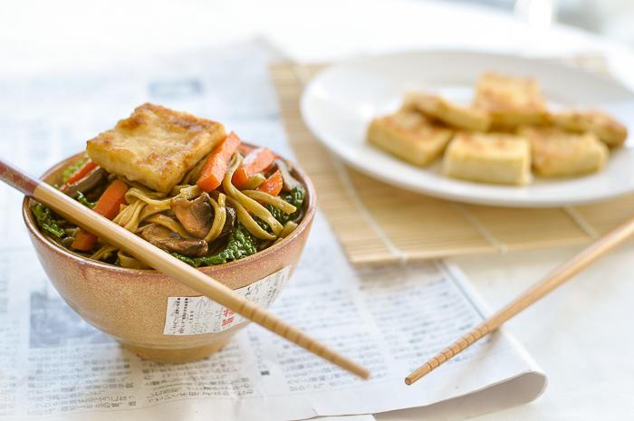

Isarose
Lifestyle, fashion and beauty
Tofu is vies
“Weet je wat, ik word veganist, want tofu is een miljoen miljard keer lekkerder dan slavinken,” zei niemand in de geschiedenis van de mensheid.
Tofu heeft niet de allergeweldigste reputatie. Terwijl het wel allergeweldigst lekker is kan zijn! Als je dat niet al vindt, hier een paar tips om je van gedachten te laten veranderen.
- Skip de tofu van de Appie want vies. Andere supermarkten hebben meestal het merk Bio+, die is een stuk beter. Toko’s hebben soms verse tofu, vaak geweldig! (Als je graag kijkt naar tekenfilms over het bezorgen van verse tofu, die bestaan.) Skip vooral ook de supergoedkope pakjes van dubieuze herkomst trouwens, ook vies.
- Zorg voor de juiste voorbewerking. Als je de tofu in een saus gaat verwerken of iets anders waarvoor het stevig moet zijn, vries het dan eerst in en laat het weer ontdooien voor je het verder verwerkt. Wordt ‘ie steviger van. Als het voor het roerbakken is: persen! Daar heb je speciale persen voor maar als je het blok in twee gelijke stukken snijdt en een eindje van elkaar legt voor de stabiliteit kan het ook tussen twee snijplanken met iets zwaars erop. Ik gebruik daarvoor een weckpot met linzen want ik ben een wandelend cliché. Als wij in een land zouden leven waar je 2948 verschillende soorten tofu kan krijgen in de supermarkt was dit niet nodig want dan koop je extra stevige tofu. Maar die hebben wij normaal niet.
- Droog je tofu af. Met een tot op dat moment schone theedoek. Voorzichtig. Maar grondig.
- Niet marineren. Marineren is onzin. Het trekt niet in en het verpest je korstje.
- Bak het, in een beetje olie, op hoge temperatuur, tot één kant een korstje heeft. Als je blokjes hebt ipv plakjes: af en toe omschudden/scheppen (voorzichtig!) tot 2-3 kanten een korstje hebben.
- Draai om en wacht tot de andere kant tot ongeveer halverwege mooi-korstje-stadium is.
- Als je wilt dat je tofu een extra smaakje heeft, gooi er dan op dit moment 3 eetlepels rode wijnazijn en 3 eetlepels Kikkoman overheen, of iets anders waar je trek in hebt.
- Schep om en/of laat verder bakken tot het korstje compleet is.
- Als je een roerbakgerecht maakt, haal dan nu de tofu uit de pan, bak de rest, doe de saus erbij, en schep de tofu er op het laatst doorheen.
- Er is geen stap 10. Dat zou overmatig gecompliceerd zijn.
Ik eet hier moeiteloos een pan van leeg, maar misschien ligt dat aan mij.
Gepost op 24 mei 2016
Categorie: Health